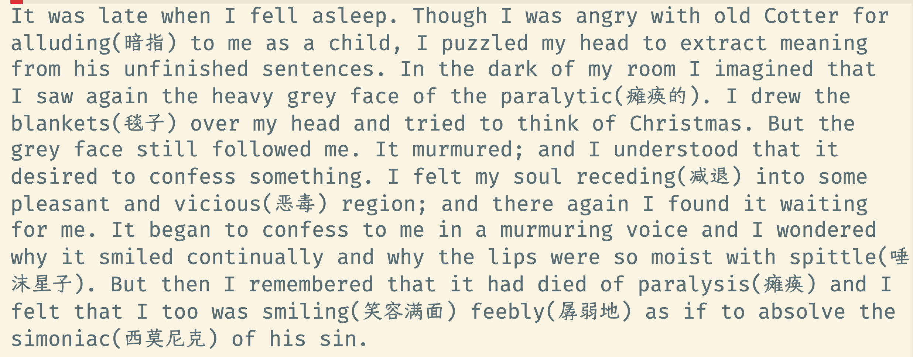
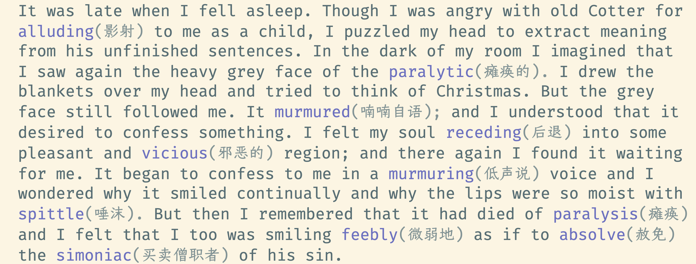
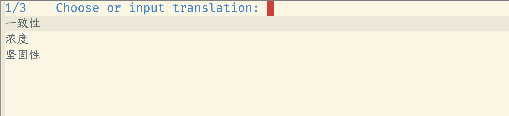
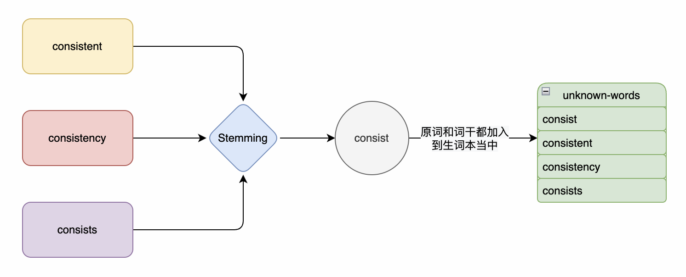
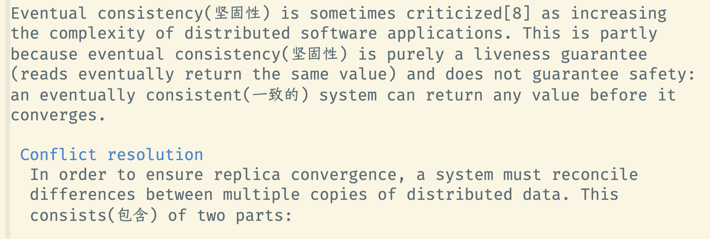

dictionary-overlay
Table of Contents
1. 目标
辅助英文较弱的 Emacser 进行英文阅读。提供了两种能力：
- 生词本提示：自定义“生词本”，阅读英文文章时，通过 overlay 给生词添加中文翻译。
- 透析阅读法：自定义“熟词本”，阅读英文文章时，通过 overlay 翻译当前文章所有未标记为“熟词”的单词

Figure 1: Example
2. 安装
2.1. websocket-bridge
用于 Emacs 与外部应用进行 websocket 通信
2.2. Python 相关包
插件通过 python 编写，需要安装 python3
- websocket-bridge-python websocket-bridge 的 python 客户端
- tokenizers python 分词工具
- six pystardict.py 的依赖
- sexpdata 用于把 python 对象转换为 sexp
- snowballstemmer 用于“词干提取”的算法包
- google-translate 用于网络翻译，非必选，可以用 crow-translate 替换
你可以使用 dictionary-overlay-install 来安装相关的 python 包（不包括 google-translate）。
2.3. 网络翻译
默认会使用 sdcv 本地词典翻译。当单词在本地词典未找到时，会使用网络翻译，目前支持：
你可以使用： dictionary-overlay-install-google-translate 来安装 google-translate
2.4. 下载 dictionary-overlay
git clone --depth=1 -b main https://github.com/ginqi7/dictionary-overlay ~/.emacs.d/site-lisp/dictionary-overlay/
2.5. 添加下面配置到 ~/.emacs
(add-to-list 'load-path "~/.emacs.d/site-lisp/dictionary-overlay/") (require 'dictionary-overlay)
3. 命令
| 命令 | 说明 |
|---|---|
| dictionary-overlay-start | 启动 dictionary-overlay 应用 |
| dictionary-overlay-restart | 重启 dictionary-overlay 应用 |
| dictionary-overlay-render-buffer | 使用翻译渲染当前 buffer |
| dictionary-overlay-toggle | 打开\关闭翻译渲染当前 buffer |
| dictionary-overlay-jump-next-unknown-word | 跳转到下一个生词 |
| dictionary-overlay-jump-prev-unknown-word | 跳转到上一个生词 |
| dictionary-overlay-mark-word-known | 标记当前单词为“已知” |
| dictionary-overlay-mark-word-unknown | 标记当前单词为“生词” |
| dictionary-overlay-mark-buffer | 标签当前 buffer 中所有未标记为“生词”的单词全为“已知” |
| dictionary-overlay-mark-buffer-unknown | 标签当前 buffer 中所有未标记为“生词”的单词全为“未知” |
| dictionary-overlay-install | 安装 dictionary-overlay 所依赖的必选 python 包 |
| dictionary-overlay-install-google-translate | 安装 google-translate |
| dictionary-overlay-modify-translation | 修改当前单词的“翻译”，可以选择词典中的翻译，也可以手动输入 |
4. 选项
| 选项 | 说明 |
| dictionary-overlay-just-unknown-words | t 时使用“生词本”模式，nil 为“透析阅读”模式，默认为 t |
| dictionary-overlay-user-data-directory | 用户数据存放的目录，默认值为：“~/.emacs.d/dictionary-overlay-data” |
| dictionary-overlay-translation-format | 翻译展示的形式，默认是："(%s)" |
| dictionary-overlay-unknownword | 生词的展示形态face 默认为nil, 用户可自行修改 |
| dictionary-overlay-translation | 生词的翻译的展示形态 face 默认为nil, 用户可自行修改 |
4.1. face
用于控制生词的展示, 为了不影响阅读默认为空，不对原始face 做任何修改。如果希望能通过face 对生词进行显示增加可以参考
(defface dictionary-overlay-translation
'((((class color) (min-colors 88) (background light))
:underline "#fb8c96" :background "#fbd8db")
(((class color) (min-colors 88) (background dark))
:underline "#C77577" :background "#7A696B")
(t
:inherit highlight))
"Face for dictionary-overlay unknown words.")
face `dictionary-overlay-unknownword` 如果用户不自行定义，那么不会给单词加上overlay, 只会新增翻译的 overlay. 这样的好处是，当你在单词上移动时，仍旧按照字母移动，而不是按照overlay 移动。
推荐使用的 face ：
(copy-face 'font-lock-keyword-face 'dictionary-overlay-unknownword) (copy-face 'font-lock-comment-face 'dictionary-overlay-translation)

Figure 2: dictionary-overlay with face
5. 使用方法探讨
默认使用“生词本”模式，阅读英文文章时，需要手动添加生词（ dictionary-overlay-mark-word-unknown ）。可以和你的“查询单词”的快捷键保持在一起。那么你下次遇到生词时，会自动展示出生词。
当你开始阅读文章时，可以把当前 buffer 中所有未标记为 known 的单词标记为 unknown ( dictionary-overlay-mark-buffer-unknown )
当你阅读完一篇文章以后，可以把当前 buffer 中所有未标记为 unknown 的单词标记为 known ( dictionary-overlay-mark-buffer )
当一个生词反复出现，你觉得自己已经认识了它，可以标记为 known （ dictionary-overlay-mark-word-known ），下次不再展示翻译。
当你阅读了足够多的文章，你应该积累了一定量的 know-words ，此时，或许你可以尝试使用"透析阅读法"（ (setq dictionary-overlay-just-unknown-words nil) ）将自动展示，“或许”你不认识的单词。
6. 翻译逻辑
当前当前翻译的逻辑是：
- 如果单词在本地的sdcv 的词库中，则选择sdcv 翻译结果中的第一条；
- 如果单词在本地不存在，则使用网络翻译：crow-translate 或者 google-translate 进行翻译
如果你对翻译结果不满意，可以使用
dictionary-overlay-modify-translation来修改当前单词的“释义”。该命令，可以选择 sdcv 和网络词典的所有“释义”，也可以手动输入。
Figure 3: dictionary-overlay-modify-translation
7. 词干提取+词形还原
在自然语言处理领域，对单词有两种处理方式：
- 词干提取 – Stemming
- 词形还原 – Lemmatisation
词干提取，通常会使用算法去掉或转换单词的后缀，提取单词中的主干部分。提出的过程不够精确，可能返回的不是一个有效的单词 例如apple -> appl 。但它的优点是，它可以把一个单词的动词、名词、形容词抽取出一个通用的词干
词形还原，会把一个单词还原到最基础的形态，例如 drove -> drive ，但需要指定单词的词性才能准确转换。例如 drove 在词典里存在动词和名词，只有你指定它的词性为动词，才会还原成 drive
在我们这个应用当中，可以选择使用“词干提取”，它可以把一个单词的动词、名词、形容词抽取出一个通用的词干。而通常，如果我们不认识一个单词，那么很可能它的动词，形容词都不认识。另外就是，它足够简单。不像词形还原，还需要先分析单词的词性。

Figure 4: add stem of word in to unknown list
因此，我们可以每次添加生词时，把单词与它的词干都加入到生词本当中。
当需要渲染当前buffer 时，遇到单词或者单词词干在生词本中，就翻译它的结果。示例：

Figure 5: stem render
7.1. SnowballStemmer
Snowball 是一种很常用的词干提取算法。python 中有一个专门的实现 Snowball 算法的包snowballstemmer, 它比 nltk 包轻量。当前版本不需要 nltk 的复杂功能，因此直接使用 snowballstemmer 包。
我尝试，不把 stem 的结果存放到生词本，而是判断一个单词是否在生词本时：
- 判断单词是否在生词本中；
- 对生词本中的所有单词进行stem, 判断当前单词的stem 是否在这一堆stem 当中。
性能教差，因此选择当记录生词时，把单词和单词的stem 都记录到生词本里。那么做判断时只需要判断：
- 单词是否在生词本里；
- 单词的 stem 是否在生词本里。